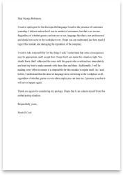

Every work Occasion
Our letter samples help you find the perfect
words to address every possible work scenario.
If you've submitted a successful cover and
landed the job, you deserve congratulations! You
have a basic understanding of general business
writing styles. (If you haven't learned how to write
a cover letter, visit ourcover letter guidelines.)
However, a cover letter is only one type of
business comunication; over the course of your
career, you'll need to know how to maneuver
through many different pronfessional and personal
hurdles skillfully.
For example, do you know how to submit your
two weeks notice while maintaining your
professional relationships?Are you skilled at
successfully negotiating a promotion and pay
raise? hHave you learned to write correspondence
to comfort a grieving coworker?
We'll walk you through 11 different circumstances
that might arise in your professional life and
provide free professional lettr samples and
advice you can use to get through them. Our
library of professional letter samples will guide
you through the best and worst circumstances of
your career.
